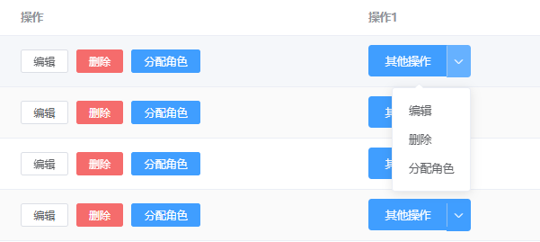
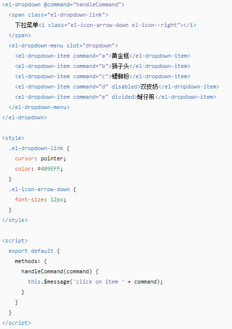

这边因为业务的需求，觉得随着产品中心以后需要按钮的增多（图1操作栏的效果），这样会导致排版和按钮过于冗长的问题，用户体验不佳，于是想到利用el-dropdown做一个下拉按钮（图1操作1栏的效果) 。

图1 两种按钮效果
但是ElementUi官方文档中的handleCommand方法只允许接入一个参数，这个参数用于触发你选择的是哪一个选项。而我们实际中还需要传入一个当前行数（如果和我一样，也是用table显示数据的话）的对象进去，后面要使用这个对象的某些字段传给后台进行一些增删改查的操作。

图2 ElementUi官方文档中el-dropdown的样例
于是，我们必须在执行handleCommand方法之前，对这个command参数进行重新封装成一个对象，使其内部包含我们想要的数据方便后面调用。
放出代码：
<el-table-column label="操作1">
<template slot-scope="scope">
<el-dropdown split-button type="primary" @command="handleCommand">
其他操作
<el-dropdown-menu slot="dropdown" >
<el-dropdown-item :command="beforeHandleCommand(scope.$index, scope.row,'a')">编辑</el-dropdown-item>
<el-dropdown-item :command="beforeHandleCommand(scope.$index, scope.row,'b')">删除</el-dropdown-item>
<el-dropdown-item :command="beforeHandleCommand(scope.$index, scope.row,'c')">分配角色</el-dropdown-item>
</el-dropdown-menu>
</el-dropdown>
</template>
</el-table-column>因为我们是写在表格里的，所以需要一个插槽，具体的根据实际情况进行修改。给<el-dropdown-item>标签的command属性绑定一个方法，这个方法就可以传入我们想要的参数，然后利用这个方法封装成一个对象，再将这个对象传入handleCommand方法。
<script>
export default {
methods: {
handleEdit(index, row) {
//todo
},
deleteUser(index, row) {
//todo
},
assignRole(index, row){
//todo
},
beforeHandleCommand(index, row,command){
return {
'index': index,
'row': row,
'command':command
}
},
handleCommand(command) {
switch (command.command) {
case "a"://编辑
this.handleEdit(command.index,command.row);
break;
case "b"://删除
this.deleteUser(command.index,command.row);
break;
case "c"://分配角色
this.assignRole(command.index,command.row);
break;
}
}
},
}
</script> 至于匹配command选了哪个，用switch语句效率就会比较高了。